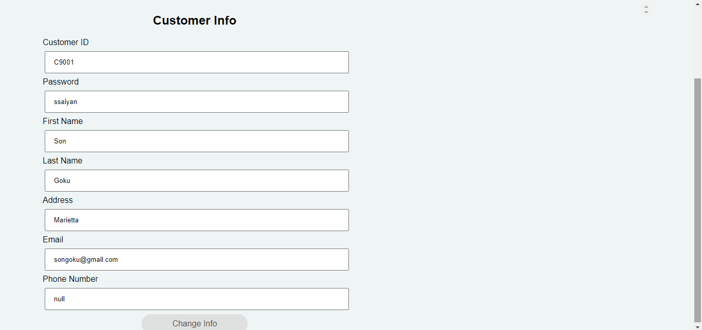
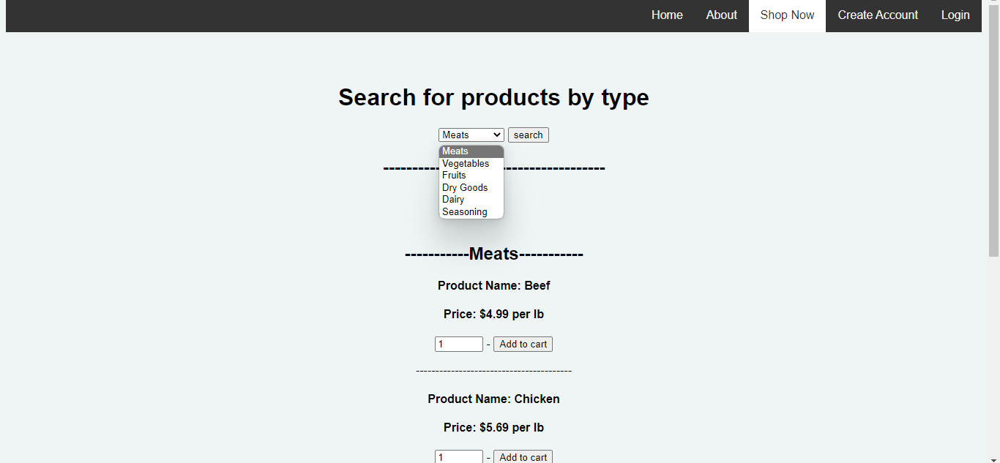
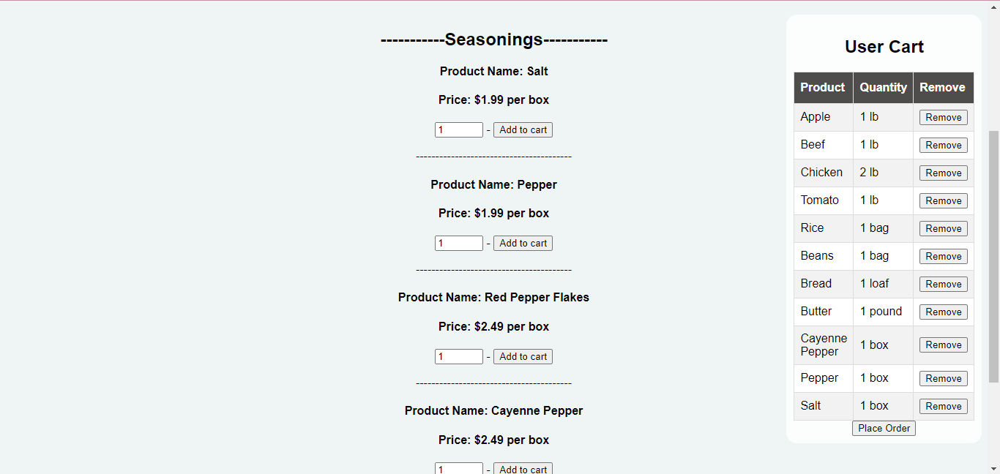
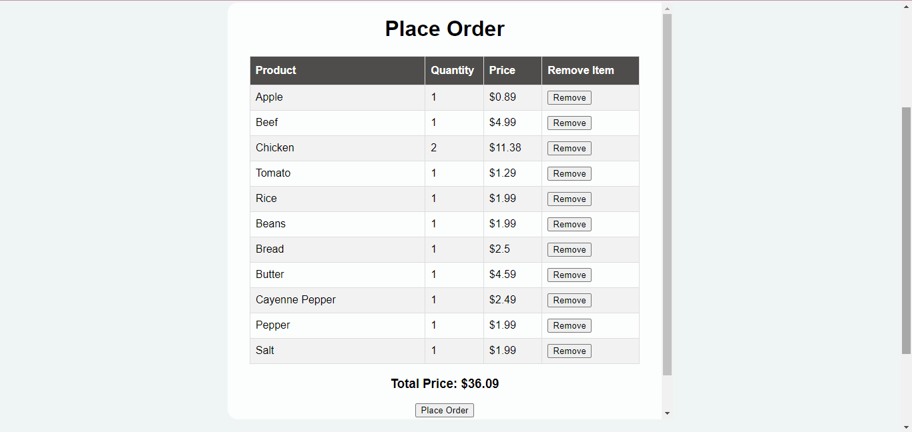
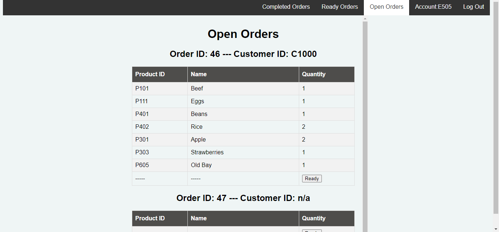
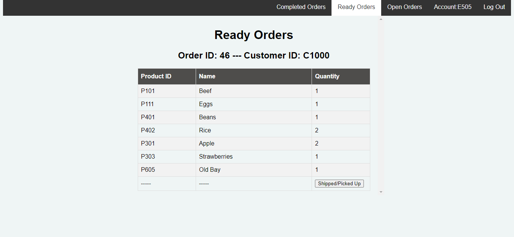
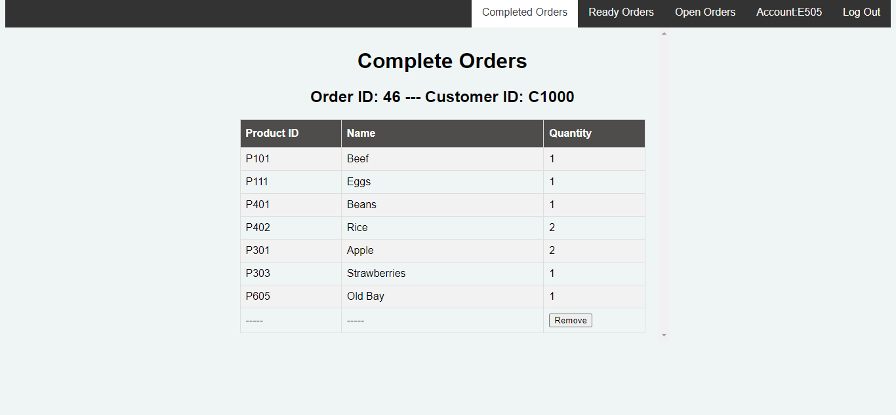

Project Description
| In this project, we had to create a Web Application that may be used
by a Customer looking to purchase Grocery Store Items, as well as an Order Processing Employee, whose job is to fulfill the online orders placed by Customers. |
A Customer should be able to:
- Search Grocery Store Products.
- Make a Purchase without creating a Customer Account.
- Create a new Customer Account.
- Login, Search Products and Make Purchases with their Customer Account.
- Change the information in their Customer Account, like Address, etc.
An Order Processing Employee should be able to:
- Login.
- View a list of orders that need to be fulfilled.
- Change the state of an order from Open to Ready to Shipped/Picked up.
My Contribution to the Project
| 1. I built the business objects needed for the project. The business objects
is helpful and is used to store application data. Business objects can be accessed by Web applications. 2. I helped with the index.html, which is the landing page. This is the first page every user sees when they open the site. 3. I also built some of the servlets for the project like the Customer Login servlet and the Employee Login servlet. A servlet acts as a middle-man between the View and the Model. It is that requests data from the server, validates the data, and checks it against the data stored in the database. The Customer Login servlet is code to check against the data (User ID & Password) that a customer enters. If information is valid, login will be successful. If information is invalid, a message is printed out and login is unsuccessful. The Employee Login servlet also checks against data that an employee enters in the login page and validates it. 4. Some of the jsps I built are the Create Account jsp, and View Info jsp. A jsp (Java Server Page) contains Java code that is used for creating web applications. It processes data on the server side. The function of the Create Account jsp is to allow a customer create an account on the website with valid credentials and it appears on the database. With that, a customer can login on their next website visit and it will be valid. The View Info jsp allows a customer to view, change, or delete their information from their profile. Only validated login users can do this. |
Software used for this Project
| 1. Microsoft Teams, for communication and uploading of files. 2. Apache Netbeans IDE 14 to build the html, css, jsp, and servlet files. |
Video link
Screenshots
|
1 /8

Customer Information
2 /8

Products
3 /8

Cart
4 /8

Order
5 /8
.png)
Placed Order
6 /8

Open Orders
7 /8

Ready Orders
8 /8

Complete Orders
|